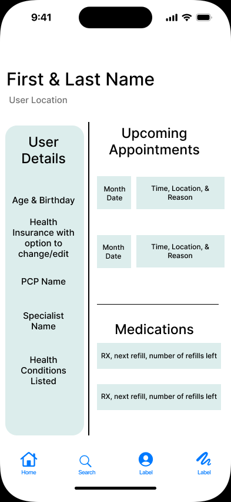

Overview
Problem
1. Young adults that are freshly off of their parents health insurance are often frustrated and discouraged when looking for new providers.
2. Insurance is complicated.
3. Finding a doctor in the area can be confusing.
4. Going to the doctor can be expensive.
Insights
Most of our respondents said that they most often use Google to find a healthcare provider in their area. However, it’s often overwhelming because of the copious amounts of providers. Respondents also found healthcare in the United States to be too complicated and expensive. This has resulted in individuals avoiding the doctors office unless absolutely necessary.
Solutions
1. Create an application that simplifies the healthcare process.
2. Rank doctors and providers based off of real patient reviews.
3. Include copay amounts for insurance companies.
4. Be able to create appointments with doctors that are nearby.
Process
Assumptions
I made some general assumptions about people and finding healthcare providers.
1. People find it difficult to find a healthcare provider;
2. They don’t want to spend a lot of time and energy finding a healthcare provider;
3. Finding nearby doctors that are credible is difficult;
4. People are often taken off guard by the price of healthcare services.
In a post-pandemic world, people are leaving their homes less and less, especially to go see the doctor. Finding the right doctor nearby is often very complex and overwhelming for individuals.
Research
To better understand the users needs regarding healthcare, my team and I conducted several user interviews.
7
User Interviews
17
Interview Questions
User Research
100%
of people use Google to search for healthcare providers.
85%
of people put off going to the doctor unless absolutely necessary.
85%
of people think the American healthcare system is too complex.
57%
of people are still on their parents insurance.
Key takeaways from our user interviews:
1. As users stated they want a simplified way to look at insurance and healthcare providers, Healthcare Genie should categorize and rank providers for users.
2. Because doctor trips can be expensive, users want to know what their visit will cost upfront along with any additional fees, Healthcare Genie should show copays and other fees that you’ll be charged before your visit.
Persona
My teams user interviews gained us very valuable user insights which we then used to form a user persona. The main goal of the persona is to display those patterns and pain points, which then allowed us to further empathize with users.
Considering Shaundra’s goals and pain points, the main theme is to simplify the process of finding a healthcare provider for users while taking into account those providers’ proximity to the user.
User Journey Map
By creating a user journey map I gained a better understanding of the users’ expectations and their experiences while finding a provider without our app.
Competitive Analysis Highlights
To create a unique value proposition for Healthcare Genie, I analyzed our top current competitors. Healthcare Genie offers the main features that our competitors provide to users while our app is more organized and doesn’t require any extra fees to use.
User Flow & User Stories
After conducting market and user research, it’s time to highlight the features of the product. The user stories were used to create User flows, which were done in Figma, to show how the user would interact with the product to accomplish their goals.
As a new user with no insurance, I want to sign-up and find a provider that works for me.
As an existing user without insurance, I want to find insurance and make an appointment with a doctor.
Wireframe & Testing
Hand Sketch Wireframe
I began my design phase by hand sketching some ideas for Healthcare Genie features.
Wireframe
I then created basic wireframes to have a defined template of the screens
User Testing
My team and I conducted 4 user tests to test the functionality of the application.

Some users thought that the home page was hard to navigate and full of unnecessary information. So we decided to simplify the information that is shown.
Users were also confused on how to navigate to find a provider, so we added a search button in the main navbar.
The screen included a back arrow to navigate to the most recent page, however, there’s no way to navigate to other important pages. So I added the main navbar to the provider page for ease of access.
On the setting an appointment screen users didn’t know what times would be available for an appointment. So we decided to only show available appointment times on the screen.
The onboarding process was too long and complex, so we moved the new user sign up option to the bottom.